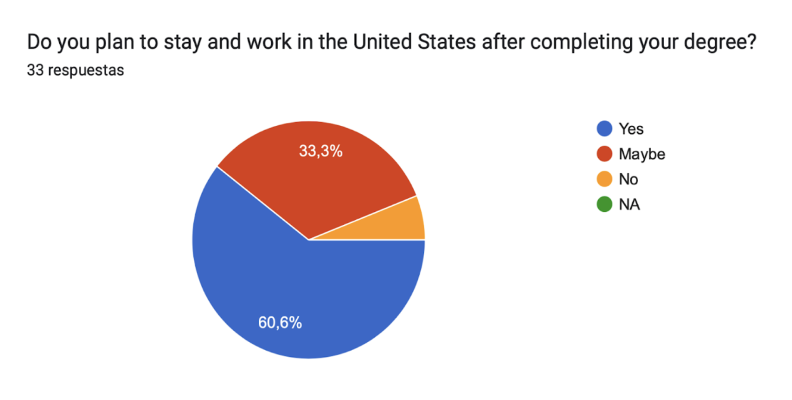
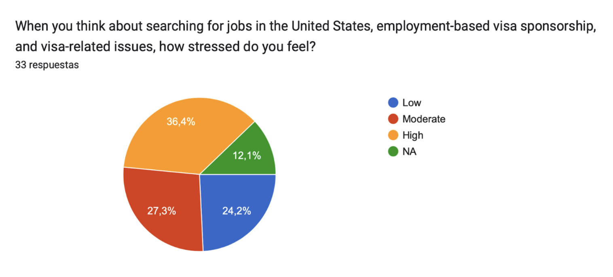

Whenever Isidora Stella visits Northeastern University’s Office of Global Services, she knows that she needs to make her requests simple and basic. As a fifth year economics major who moved from Greece to study in Boston, Stella’s schedule is packed. With paperwork to fill, jobs to apply for, and schoolwork deadlines to meet, requesting help and resources from OGS should be the one thing in her life that’s seamless — yet she finds the facility is no more helpful than the cold digital interface of their online resource hub.
According to the Open Doors Organization, the United States hosted 1 million international students during the 2022-2023 academic year. Northeastern University is the second leading host institution for international students with over 20,000 students enrolled, coming in just behind New York University. Boasting “professional expertise and support,” the Northeastern’s Office of Global Services (OGS) often lacks any expansion beyond what international students can see on their website. Although they provide rudimentary resources and links, Stella said that OGS lacks personalized consulting and support for overwhelmed young students navigating their college years in a foreign country.
“They won’t do that extra little mile, you know, to help you,” Stella said. “It’s like, they will just help you with a very basic process. But if it’s something that they can find on their website or on their notes, the people who work there don’t know anything more than that.”
From the first time Stella stepped on campus, she’s encountered a series of endless hoops and obstacles to figure out her post-graduation career path as an international student. She began her undergraduate education by majoring in politics, philosophy and economics, but immediately stumbled into a massive roadblock — she could only work for a single year in the United States after graduating as an F1-visa holder. After learning that her friend, a business administration and economics major, was eligible to work for three years as a STEM major, she hoped the economics portion of her degree would also help her qualify. But when Stella visited OGS seeking clarification and guidance as to whether or not PPE counted towards a STEM degree, they were just as lost as she was.
“They had no idea,” Stella said. “I switched to just economics to make sure I have these three years.”
Eduardo Díaz Granado, a first year finance major at Northeastern, already feels these pressures as an international student from Colombia. Finance doesn’t count towards a STEM degree, and Díaz is already reconsidering his changing major.
“Well, I’ll tell you: stressed and anxious,” Díaz answered when asked how he felt about being eligible to work only one year versus three years post graduation. “It makes me feel that I have to do something else, you know? I need to pursue another career.”
The constant chaos within OGS partially stems from the staff they hire. Most OGS employees are international students themselves, who are only authorized that same maximum of one year of working outside of campus — including six-month co-op opportunities. Therefore, off-campus jobs are often not an option for international students, restricting them to earning additional sources of income only via employment at their university. Stella believes that these conditions have transformed the office into a feedback loop of confused international students with more questions than answers.
“The person you have direct contact with is some grad student that basically wants a job, and so they work at OGS because that’s the only place they can work on campus,” Stella said. “I feel like I already know what they know. I’ve never received any new knowledge, or something that they don’t know, or something that I didn’t already know from these people, because what they know is just on the website.”
With the same unclear and detached information parroted back at them with each visit, international students often find their experiences with OGS insubstantial. Abandoned by their own institutions, they’re forced to figure out employment paperwork, job applications, and other international student-specific tasks on their own — making the already disorienting nature of college life that much more daunting and confusing.
Every restriction, limitation, and hardship that international students face on a daily basis all culminate into one response — stress. With the extra barrier of navigating academics and employment in a new country quickly becomes a nightmare for the mental health of international students as in a campus survey the majority of them expressed a ‘high’ level of stress.
Survey collected from international students attending NEU, BU, and other schools in Boston.
Muhammed Çetinkaya, a Boston University graduate student from Türkiye who’s studying international relations, said he feels the weight of that anxiety every day.
“It’s hard because you came to this country to accomplish something,” Çetinkaya said. “But you live with the fear that if you can’t find a job, you are basically kicked out. Hopefully that will not happen to me.”
Colombia native and Northeastern University business administration major Santiago Urrea said his international student status creates tension in nearly every aspect of his life.
“[It’s] in everything,” Urrea said. “In my relationships, in my relationships with my family, in my habits, in my mental and physical health, everything like that.”
Tight deadlines which restrict post-grad planning only further accentuate that stress. F-1 visa’s permits employment after graduation through Optional Practical Training, but all graduates must find employment within the first 90 days of their graduation date — leaving no room for career exploration or any mistakes.
“This clock starts ticking and you have two months to find a job,” Stella said. “I’m allowed to be unemployed for three months. So it’s not just that the clock is ticking until you get a job. It’s also — say, I work at the company for a year and I hate it, and I want to quit and find a different job. I need to find my next job within three months — otherwise I have to leave.”
For an H1-B visa sponsorship, which allows an extended residence for foreigners, everyone working under OPT leaves their future to chance by participating in a yearly lottery. The odds of winning stand at 33% — the losers must leave after their OPT employment ends. Companies can sponsor H1-B visas to help international graduates work, but with sticker prices that average between $4,000 and $9,000, many companies prefer to hire domestic students. Stella, like many other international students, fear that potential employment discrimination results in less return offers for co-ops and jobs compared to domestic workers.
“Truthfully, I’ve seen many internships, many programs from companies, banks, big corporations, and whatnot… which is something ironic in this country,” Díaz said. “Because they tell you: ‘Okay, we don’t discriminate [against] your ethnicity, where you come from, your background’ and whatnot. Yet they tell you: ‘We don’t accept people that need sponsorship.”
The possibility of discrimination in the American workplace places a major burden on international students — here, most international students surveyed indicated that they plan to stay and work in the United States after graduating.
Survey collected from the same sample of students from the other chart above.
Stress, paperwork, and uncertainty loom large in the daily lives of international students. For students like Yohan Khan, a third-year history major from India at Tufts University, some institutions are taking the initiative to help them juggle their educational and career demands. Khan said he received crucial support from representatives at Tufts’s International Center that helped him figure out his social security paperwork and any other inquiries he had.
“They told me what I had to do and then they told me what I should do which would just make my life easier, which is something that people don’t often do when they’re giving you advice,” Khan said. “They might only tell you what they need to tell you. So I appreciate her going above and beyond with that.”
As of now, the accessibility of international student resources vary greatly by institution, but personalized services are often lacking. For Northeastern students like Stella, the stress of applying for jobs can be eased through more personalized services.
“I think they should just be more supportive with personal life problems,” Stella said. “Perhaps even co-op and academic advisors should be a little bit more educated, too, on what it means to be an international student.”